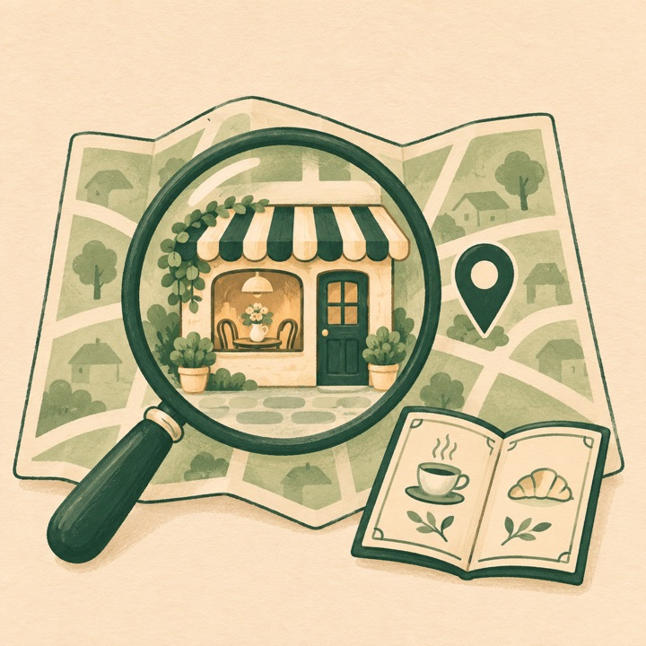
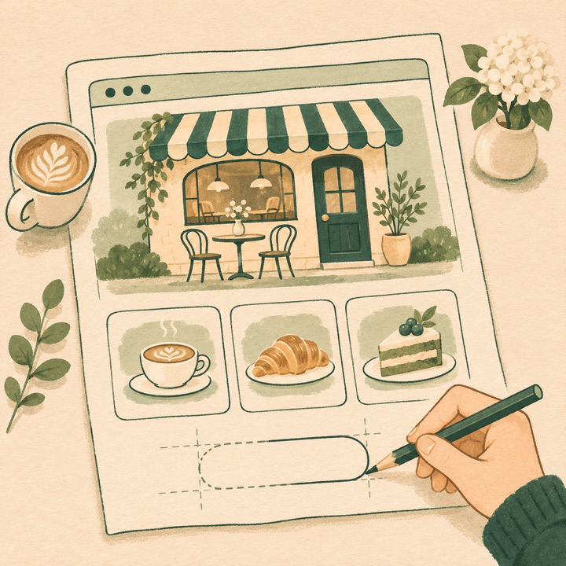
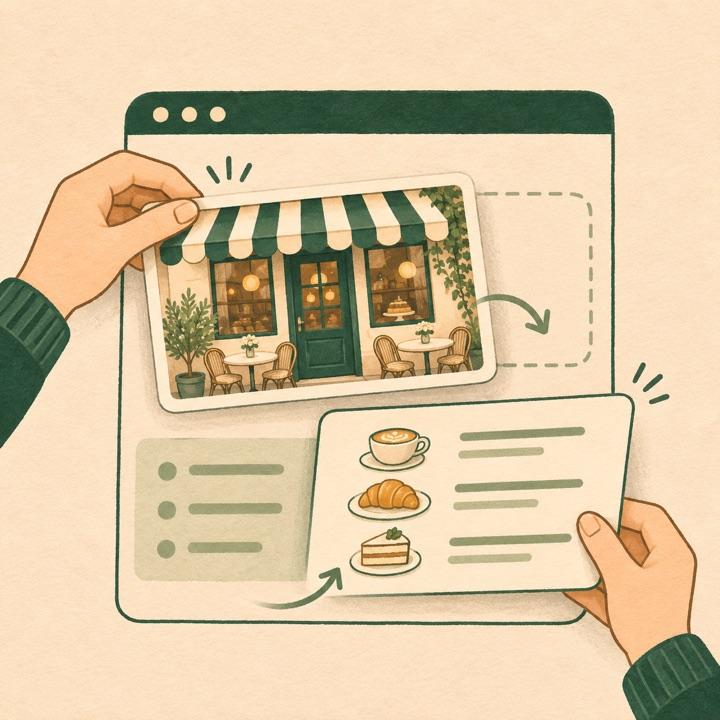
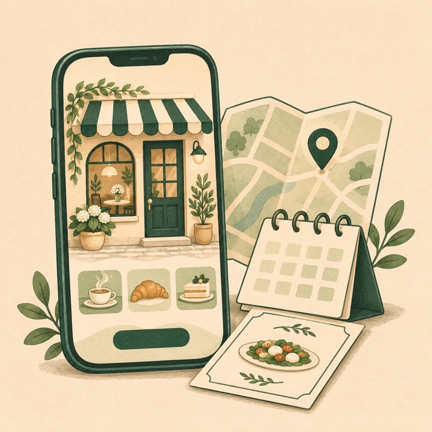

Сайты, на которые
хочется зайти.
Делаем сайты для ресторанов и кафе: меню с ценами и фото, бронь и связка с картами в одном месте.
Набросок до оплаты
Сначала покажем, каким может быть ваш сайт.
Оплата после готовности
Платите, когда сайт готов.
Адрес сайта — на вас
Домен оформляется на заведение и остаётся у вас.
Сайты для ресторанов
и кафе.
Меню
Меню с ценами и фото, которое удобно открыть с телефона.
Бронь и заказ
Гость бронирует стол или делает заказ в WhatsApp и Telegram прямо с сайта.
Яндекс Карты и 2ГИС
Привязываем сайт к картам и подтверждаем карточку в Яндексе, чтобы гости находили вас.
Вы присылаете название.
Мы делаем набросок.
Сначала показываем набросок вашего сайта, потом доделываем по вашим правкам.

Смотрим, как вас ищут
Проверяем ваши карточки в Яндекс Картах и 2ГИС, соцсети и меню.

Делаем набросок
Собираем первую версию сайта на вашей информации и показываем её до оплаты.

Доделываем по правкам
Меняем тексты, фото и блоки, пока сайт не станет вашим.

Запускаем и поддерживаем
Выкладываем сайт в интернет, привязываем к картам и обновляем меню и цены каждый месяц.
Где заведения теряют гостей.
Нет своего сайта
Есть только соцсети, и гостю негде быстро посмотреть меню и цены.
Карточка не подтверждена
Владелец не подтвердил карточку в Яндексе и не может сам обновить в ней данные.
Метка не на месте
Точка на карте стоит не там, где вход, и гость идёт не туда.
Разные номера
В 2ГИС, Яндексе и соцсетях указаны разные телефоны — непонятно, куда звонить.
Битые ссылки
Ссылка на сайт или WhatsApp в карточке не открывается.
Старые цены
В карточках и меню цены, которые давно поменялись.
Сайт остаётся вашим.
Домен, хостинг и карточки заведения оформлены на вас. Если перестанем работать вместе, сайт продолжит работать и всё останется у вас.
Всё важное до начала.
Какие сроки выполнения?
Срок зависит от задачи, количества страниц и сложности сайта. Мы работаем командой и согласуем сроки до начала работы. Присылаем результат заранее, до согласованной даты, чтобы оставалось время всё обсудить и при необходимости внести правки.
Сколько стоит сайт?
Цена — по запросу: она зависит от задачи и количества страниц. Напишите нам, расскажите о заведении, и мы назовём цену.
Нужно ли готовое техническое задание?
Нет. Расскажите своими словами, какое у вас заведение и что хочется от сайта. Остальное уточним вопросами и сами соберём по вашим карточкам и соцсетям.
Можно посмотреть сайт до оплаты?
Да. Сначала мы делаем набросок на вашей информации и показываем его. Решаете, нравится или нет, уже глядя на свой сайт.
Что нужно от вас?
Название заведения и ссылка на карточку в Яндекс Картах или 2ГИС. Если есть свежее меню, фото и соцсети, тоже пришлите.
Что такое поддержка?
Мы каждый месяц следим, чтобы сайт работал, и вносим изменения: новое меню, цены, фото, акции. Вам не нужно ни в чём разбираться.
Можно что-то добавить после запуска?
Да. Сайт можно дополнять: новые разделы, фото, сезонное меню, акции. Небольшие изменения меню и цен входят в поддержку, новые разделы обсудим отдельно.
Можете доработать сайт, который уже есть?
Да, если его можно нормально развивать дальше. Сначала посмотрим ваш сайт и честно скажем, что лучше: доработать его или сделать новый.
Остался вопрос?
Напишите нам. Обсудим сроки, задачу и подходящий стиль для вас.
Пришлите название.
Остальное обсудим.
Напишите в Telegram, WhatsApp или MAX или позвоните. Расскажем, каким может быть ваш сайт.
Написать можно в любое время